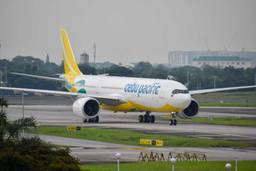
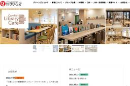
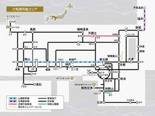

TRAICY（トライシー）
https://www.traicy.com/
TRAICY（トライシー）は、航空・LCC・鉄道・ホテル・ゲストハウス・バックパッカーズの最新情報を発信している、日本最大級のトラベルメディアです。
フィード
米FAA、全米の空港に地上待機命令 管制施設の通信障害で大規模な遅延・欠航の見込み 1
1
TRAICY（トライシー）
アメリカ連邦航空局（FAA）は、航空管制施設の通信障害に伴い、全米の空港を対象とした地上待機命令（Ground Stop）を発令した 現地時間11月13日午後1時（日本時間11月14日午前6時）ごろ、飛行中の航空機を監視 […]投稿 米FAA、全米の空港に地上待機命令 管制施設の通信障害で大規模な遅延・欠航の見込み は TRAICY（トライシー） に最初に表示されました。
5時間前

セブパシフィック航空、東京/成田〜セブ線を期間増便 12月9日〜2027年1月29日、週10往復
TRAICY（トライシー）
セブパシフィック航空は、東京/成田〜セブ線を期間増便する。 12月9日から2027年1月29日まで、月・水・金曜の週3往復を増便し、週10往復を運航する。機材はエアバスA320neoを使用する。所要時間は東京/成田発が5 […]投稿 セブパシフィック航空、東京/成田〜セブ線を期間増便 12月9日〜2027年1月29日、週10往復 は TRAICY（トライシー） に最初に表示されました。
6時間前
東京九州・新日本海フェリー、車両のみ航送サービスを終了 12月1日で 1
TRAICY（トライシー）
東京九州フェリー、新日本海フェリーは、無人車航送サービスを12月1日で終了する。 同日以降に出港する全便で、乗用車や特殊手荷物のバイク、自転車などを車両のみで航送する申し込みを受け付けない。車両を航送する場合はドライバー […]投稿 東京九州・新日本海フェリー、車両のみ航送サービスを終了 12月1日で は TRAICY（トライシー） に最初に表示されました。
7時間前
三越伊勢丹ホールディングス、ホテル開発へ 2032年開業
TRAICY（トライシー）
三越伊勢丹ホールディングスは、ホテル事業に進出する。 自社が完全もしくは部分的に保有する不動産が多い、新宿5丁目エリアの自社オフィス5棟を一体開発する。花園神社の正面、明治通り沿いに位置する。 ビルとして売却することが困 […]投稿 三越伊勢丹ホールディングス、ホテル開発へ 2032年開業 は TRAICY（トライシー） に最初に表示されました。
10時間前
セント レジス ホテル 大阪、客室リニューアル完了
TRAICY（トライシー）
セント レジス ホテル 大阪は、全160室のゲストルームとスイートのリニューアルを11月2日に完了した。 「水の都・大阪の時間と記憶」をデザインコンセプトとし、西陣織のヘッドボードやカーペットで丘陵と水脈を表現した。スイ […]投稿 セント レジス ホテル 大阪、客室リニューアル完了 は TRAICY（トライシー） に最初に表示されました。
19時間前
JALUX、天草エアラインと「御翔印 天草空港」11月16日発売
TRAICY（トライシー）
JALUXは、「御翔印 天草空港」を11月16日に発売する。 日本航空（JAL）と天草エアラインがコードシェア運航を行っていることから、天草空港のオリジナルデザインとして企画した。就航10周年の機体「みぞか号」が滑走路か […]投稿 JALUX、天草エアラインと「御翔印 天草空港」11月16日発売 は TRAICY（トライシー） に最初に表示されました。
1日前

グリーンズ、ホテル3軒を閉店へ 富山・金沢・燕三条
TRAICY（トライシー）
グリーンズは、運営するホテル3軒を閉店すると発表した。同日開催の取締役会で決議した。 コンフォートホテル富山駅前は、2027年3月23日のチェックアウト後に閉店する。建物賃貸借契約の解約に合意したため。客室数は150室。 […]投稿 グリーンズ、ホテル3軒を閉店へ 富山・金沢・燕三条 は TRAICY（トライシー） に最初に表示されました。
1日前
スカンジナビア航空、東京/羽田〜コペンハーゲン線を増便 2027年5月14日から1日1往復
TRAICY（トライシー）
スカンジナビア航空は、東京/羽田〜コペンハーゲン線を2027年5月14日から増便する。 現在は東京/羽田発土曜、コペンハーゲン発金曜を除く週6往復を運航しており、これを1日1往復に増便する。機材はエアバスA350-900 […]投稿 スカンジナビア航空、東京/羽田〜コペンハーゲン線を増便 2027年5月14日から1日1往復 は TRAICY（トライシー） に最初に表示されました。
1日前
JAL、国内線でブラックフライデータイムセール開催 羽田〜千歳線が11,000円など
TRAICY（トライシー）
日本航空（JAL）は、「JALunLun ブラックフライデー2026 国内航空券タイムセール」を11月17日から18日まで開催する。 片道最低運賃は、東京/羽田〜大阪/伊丹線が9,460円、東京/羽田〜札幌/千歳線が11 […]投稿 JAL、国内線でブラックフライデータイムセール開催 羽田〜千歳線が11,000円など は TRAICY（トライシー） に最初に表示されました。
1日前
JAL、Life Statusプログラム3周年でLSP2倍キャンペーン 2027年1月から
TRAICY（トライシー）
日本航空（JAL）は、JAL Life Statusプログラムの3周年を記念し、獲得できるLife Statusポイント（LSP）が通常の2倍相当となるキャンペーンを実施する。 対象サービスと対象期間は、国内線の搭乗とJ […]投稿 JAL、Life Statusプログラム3周年でLSP2倍キャンペーン 2027年1月から は TRAICY（トライシー） に最初に表示されました。
1日前
荻野屋、「おぎのや食堂」を閉店
TRAICY（トライシー）
荻野屋は、「おぎのや食堂」を11月13日をもって閉店する。 おぎのや食堂は、2024年7月11日にオープン。〆に伝統を受け継ぐ釜飯風土鍋ご飯を用意するコース料理などを提供する。目の前で調理される様子を五感で楽しめるように […]投稿 荻野屋、「おぎのや食堂」を閉店 は TRAICY（トライシー） に最初に表示されました。
1日前
韓国国土交通部、大韓航空傘下のLCC3社の統合を認可
TRAICY（トライシー）
韓国国土交通部は、大韓航空傘下の格安航空会社（LCC）3社の合併を認可した。 ジンエアーとエアソウル、エアプサンの3社は、2027年3月17日に合併する。存続会社はジンエアーとなる。 ジンエアーは大韓航空、エアソウルとエ […]投稿 韓国国土交通部、大韓航空傘下のLCC3社の統合を認可 は TRAICY（トライシー） に最初に表示されました。
1日前
「京都マリオットホテル」、11月1日リブランドオープン
TRAICY（トライシー）
マリオット・インターナショナルとHMIホテルグループは、「京都マリオットホテル」を11月1日にリブランドオープンした。 旧ホテル平安の森京都をリブランドした。客室数は214室。デザインは、東山の麓に位置する岡崎の風景から […]投稿 「京都マリオットホテル」、11月1日リブランドオープン は TRAICY（トライシー） に最初に表示されました。
1日前
ジェットスター、全路線対象「ブラックフライデー」開催 国内線片道3,696円から
TRAICY（トライシー）
ジェットスター・ジャパンとジェットスター航空は、日本発着全路線を対象とした「ブラックフライデー」を11月20日正午から26日午後4時59分まで開催する。 日本国内18路線、アジア8路線、オーストラリア5路線が対象で、片道 […]投稿 ジェットスター、全路線対象「ブラックフライデー」開催 国内線片道3,696円から は TRAICY（トライシー） に最初に表示されました。
1日前
IATA、2026年の世界旅客調査を発表 生体認証とAIが浸透、入国要件は障壁に
TRAICY（トライシー）
国際航空運送協会（IATA）は、2026年版の「Global Passenger Survey（GPS）」の結果を発表した。 生体認証の浸透とデジタルパスポートへの関心の高まり、旅行計画におけるAIの活用、入国要件が旅行 […]投稿 IATA、2026年の世界旅客調査を発表 生体認証とAIが浸透、入国要件は障壁に は TRAICY（トライシー） に最初に表示されました。
1日前
ドラゴンパス、デジタルバウチャーのiCouponを買収 ロイヤルティ基盤の構築へ
TRAICY（トライシー）
ドラゴンパスは、デジタルバウチャー技術を手掛けるiCouponを買収した。 ドラゴンパスは世界4,500万人以上の会員を持ち、世界の大手銀行50行のうち35行にロイヤルティ基盤を提供している。一方、iCouponは200 […]投稿 ドラゴンパス、デジタルバウチャーのiCouponを買収 ロイヤルティ基盤の構築へ は TRAICY（トライシー） に最初に表示されました。
1日前
グランドニッコー東京台場、ホワイトカラーのアフタヌーンティー 12月31日まで
TRAICY（トライシー）
グランドニッコー東京 台場は、「ホワイトプレリュードアフタヌーンティー ～冬の訪れを祝うティータイム～」を11月1日から12月31日まで提供する。 白銀の世界に佇むお城「ホワイトキャッスル」をイメージした。スイーツは、パ […]投稿 グランドニッコー東京台場、ホワイトカラーのアフタヌーンティー 12月31日まで は TRAICY（トライシー） に最初に表示されました。
1日前
ホテル ユニバーサル ポート ヴィータ、「クリスマスフェア」開催 12月25日まで
TRAICY（トライシー）
ホテル ユニバーサル ポート ヴィータは、ディナービュッフェ「クリスマスフェア」を11月9日から12月25日まで開催する。 ローストターキー、石窯で焼くピッツァ、石窯仕上げシーフードパエリア、チキンとポテトのマヨピッツァ […]投稿 ホテル ユニバーサル ポート ヴィータ、「クリスマスフェア」開催 12月25日まで は TRAICY（トライシー） に最初に表示されました。
1日前
ブリーズベイホテル、千草ホテル運営会社を買収
TRAICY（トライシー）
ブリーズベイホテルは、千草の全株式を取得し、ブリーズベイホテルグループに加えた。 千草は、北九州市八幡東区で1914年創業の料亭を起源とする千草ホテルを運営する会社。主力の婚礼事業が新型コロナウイルス感染症の影響を受け、 […]投稿 ブリーズベイホテル、千草ホテル運営会社を買収 は TRAICY（トライシー） に最初に表示されました。
1日前
クラブメッド、ブラックフライデーセールを開催 最大40％割引
TRAICY（トライシー）
クラブメッドは、ブラックフライデーセールを11月6日から30日まで実施している。 ビーチリゾートは、石垣島、バリ、プーケット、モルディブ、ビンタン、ボルネオを対象に、3泊以上の予約で宿泊プランを20％割引、航空券付きパッ […]投稿 クラブメッド、ブラックフライデーセールを開催 最大40％割引 は TRAICY（トライシー） に最初に表示されました。
1日前
エティハド航空、A380をバンコク線に投入 「ザ・レジデンス」がタイ初上陸
TRAICY（トライシー）
エティハド航空は、アブダビ〜バンコク/スワンナプーム線にエアバスA380型機の投入を、10月25日から開始した。 同路線は1日5往復を運航しており、このうち同1往復を大型化する。冬季の旅行シーズンに合わせ、輸送力を強化す […]投稿 エティハド航空、A380をバンコク線に投入 「ザ・レジデンス」がタイ初上陸 は TRAICY（トライシー） に最初に表示されました。
2日前
セブン−イレブン北九州空港店、改装工事で臨時休業 11月24日〜12月15日
TRAICY（トライシー）
北九州空港は、セブン−イレブン北九州空港店が改装工事のため休業することを明らかにした。 休業期間は11月24日午後3時から12月15日まで。休業期間中はATMやマルチコピー機を含め、すべてのサービスが利用できない。リニュ […]投稿 セブン−イレブン北九州空港店、改装工事で臨時休業 11月24日〜12月15日 は TRAICY（トライシー） に最初に表示されました。
2日前
新千歳空港に「PLAZA PREMIUM LOUNGE」が12月開業 北米路線就航に合わせ
TRAICY（トライシー）
プラザ・プレミアム・グループは、新千歳空港に「PLAZA PREMIUM LOUNGE」を12月にも開業すると発表した。 広さは814平方メートルで、収容人数は170名以上。スープカレーや北海道ソフトクリームなどのアラカ […]投稿 新千歳空港に「PLAZA PREMIUM LOUNGE」が12月開業 北米路線就航に合わせ は TRAICY（トライシー） に最初に表示されました。
2日前
GALA湯沢スキー場、南エリアを今シーズン営業休止 1
TRAICY（トライシー）
GALA湯沢スキー場は、南エリアを今ウインターシーズンに休止する。 営業を休止するコースは「260万ダラー」「ブロンコ」「イライザ」「バットマン」。設備はペアリフト「ワゴネット」と、湯沢高原スキー場へ向かう連絡ロープウェ […]投稿 GALA湯沢スキー場、南エリアを今シーズン営業休止 は TRAICY（トライシー） に最初に表示されました。
2日前

JR西日本指定エリア、新幹線・特急など17日間乗り放題で18,500円 「WMG2027 JR関西ワイドエリアパス」発売
TRAICY（トライシー）
ワールドマスターズゲームズ2021関西組織委員会は、「WMG2027 JR関西ワイドエリアパス」を10月1日から2027年2月28日まで販売する。 自由周遊区間内の山陽・北陸新幹線、特急列車、普通列車、京都丹後鉄道、和歌 […]投稿 JR西日本指定エリア、新幹線・特急など17日間乗り放題で18,500円 「WMG2027 JR関西ワイドエリアパス」発売 は TRAICY（トライシー） に最初に表示されました。
2日前
ANA、国内線でタイムセール実施 1月〜3月搭乗分
TRAICY（トライシー）
全日本空輸（ANA）は、「国内線航空券タイムセール」を11月13日から19日まで実施する。 エコノミークラスの片道最低運賃と主な対象路線は、沖縄/那覇〜石垣線が5,720円、沖縄/那覇〜宮古線が5,720円、東京/羽田〜 […]投稿 ANA、国内線でタイムセール実施 1月〜3月搭乗分 は TRAICY（トライシー） に最初に表示されました。
2日前
アコーとハードロック・インターナショナル、グローバル戦略提携を締結
TRAICY（トライシー）
アコーとハードロック・インターナショナルは、ロイヤルティ、流通、国際開発にわたるグローバル戦略パートナーシップを締結したと発表した。 ハードロックブランドのホテルは、ALL Accorの販売・ロイヤルティプラットフォーム […]投稿 アコーとハードロック・インターナショナル、グローバル戦略提携を締結 は TRAICY（トライシー） に最初に表示されました。
2日前
楽天トラベル、国内宿泊とレンタカーの予約・利用者に1,000ポイント還元
TRAICY（トライシー）
楽天トラベルは、国内宿泊とレンタカーを予約・利用した人を対象に、楽天ポイント1,000ポイントを還元するキャンペーンを11月4日午前10時から12月2日9時59分まで実施している。 国内宿泊は2025年11月4日以降の予 […]投稿 楽天トラベル、国内宿泊とレンタカーの予約・利用者に1,000ポイント還元 は TRAICY（トライシー） に最初に表示されました。
2日前
大韓航空、ソウル/仁川〜ニューヨーク/ニューアーク線を新規就航 2027年5月22日から1日1往復
TRAICY（トライシー）
大韓航空は、ソウル/仁川〜ニューヨーク/ニューアーク線を2027年5月22日に開設する。 1日1往復を運航する。機材はボーイング777-300ER型機を使用する。所要時間はソウル/仁川発が14時間、ニューアーク発が15時 […]投稿 大韓航空、ソウル/仁川〜ニューヨーク/ニューアーク線を新規就航 2027年5月22日から1日1往復 は TRAICY（トライシー） に最初に表示されました。
2日前
ANA、2027年元旦の「初日の出フライト」を羽田・成田発着で実施
TRAICY（トライシー）
全日本空輸（ANA）は、2027年元旦に「初日の出フライト」を実施する。 東京/羽田・東京/成田発着の設定があり、東京/羽田発着は27回目、東京/成田発着は7回目の開催となる。 東京/羽田発着は、1月1日午前3時半から4 […]投稿 ANA、2027年元旦の「初日の出フライト」を羽田・成田発着で実施 は TRAICY（トライシー） に最初に表示されました。
2日前